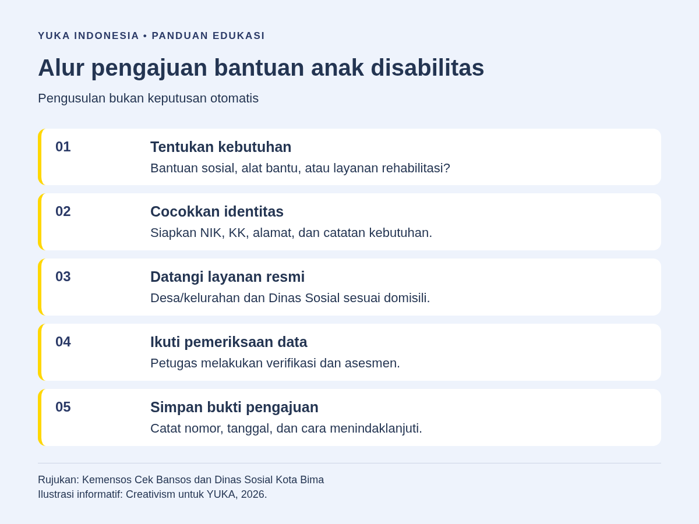
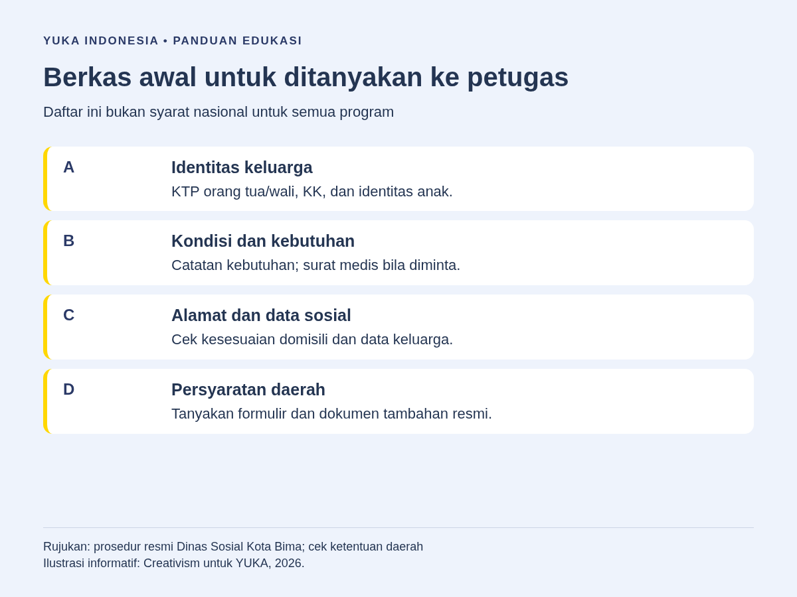
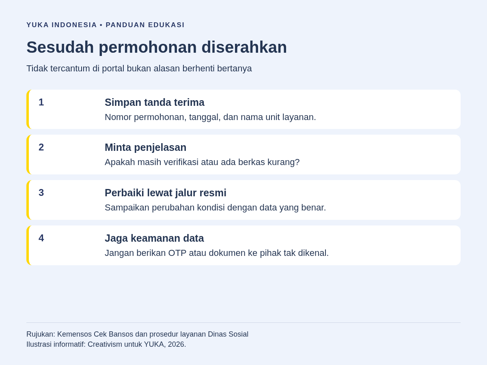

Cara mengajukan bantuan pemerintah untuk anak disabilitas dimulai dengan menentukan kebutuhan anak, menyiapkan identitas keluarga, lalu meminta informasi pengusulan kepada desa/kelurahan dan Dinas Sosial sesuai domisili. Untuk bantuan sosial berbasis data keluarga, periksa Cek Bansos Kemensos dan kesesuaian data DTSEN. Pengusulan, pendataan, dan asesmen tidak otomatis berarti bantuan disetujui.
Biaya sekolah, kebutuhan pendampingan, perjalanan ke layanan kesehatan, dan alat bantu dapat terasa berat bagi keluarga. Ketika mulai mencari dukungan pemerintah, orang tua sering menemukan informasi yang bercampur: bantuan uang, subsidi layanan kesehatan, rehabilitasi sosial, sampai bantuan dari pemerintah daerah. Jalur yang tepat bergantung pada kebutuhan anak dan ketentuan program, bukan hanya nama diagnosis.
Panduan ini membantu Anda menyiapkan kunjungan pertama ke petugas layanan sosial, menghindari berkas bolak-balik, dan menindaklanjuti permohonan secara aman. Artikel tidak menetapkan kelayakan penerima, nominal bantuan, atau jadwal pencairan. Informasi program serta persyaratan daerah perlu dikonfirmasi langsung kepada penyelenggara pada saat pengajuan.
Daftar Isi
1. Tentukan Kebutuhan Anak Sebelum Memilih Program
Mulailah dari hambatan yang paling mendesak. Apakah keluarga membutuhkan bantuan untuk memenuhi kebutuhan sehari-hari, akses layanan kesehatan, alat bantu mobilitas, atau layanan rehabilitasi sosial? Tuliskan kebutuhan tersebut dengan kalimat sederhana. Misalnya, anak kesulitan mengikuti kegiatan sekolah karena alat bantu sudah tidak sesuai ukuran, atau keluarga kesulitan membiayai perjalanan ke fasilitas layanan.
Catatan kebutuhan membantu petugas memahami masalah yang ingin diselesaikan. Ini berbeda dari hanya mengatakan bahwa anak memiliki disabilitas lalu meminta semua jenis bantuan sekaligus. Bila kebutuhan lebih dari satu, susun prioritas dan tanyakan apakah jalurnya terpisah. Program bantuan keluarga dan pengadaan alat bantu dapat memiliki mekanisme, petugas, serta dokumen yang berbeda.
Bantuan sosial berbasis kondisi keluarga
Portal Cek Bansos Kemensos menjelaskan bahwa sumber datanya adalah Data Tunggal Sosial dan Ekonomi Nasional atau DTSEN. Desil digunakan untuk menentukan sasaran bantuan sosial. Portal menyebut keluarga dalam desil 1 sampai 4 dapat diusulkan untuk PKH dan Sembako, sedangkan desil 5 dapat diusulkan untuk PBI-JK. Kata dapat diusulkan perlu dibedakan dari jaminan menerima bantuan.
Status disabilitas anak tidak membuat seluruh keluarga otomatis memenuhi kriteria semua program. Kondisi sosial ekonomi, ketentuan sasaran, proses penetapan, serta informasi program yang berlaku tetap perlu diperiksa. Jangan menyamakan sebuah hasil pencarian data dengan surat keputusan penerima.
Dukungan rehabilitasi sosial dan kebutuhan khusus
Untuk kebutuhan yang berkaitan dengan keberfungsian sosial, tanyakan kepada Dinas Sosial tentang layanan atau rujukan yang sesuai. Jelaskan hambatan anak dalam kegiatan sehari-hari serta dukungan yang ingin diajukan. Jenis layanan untuk seorang anak perlu dibicarakan dengan penyelenggara, bukan ditentukan hanya dari nama program yang beredar di internet.
Mintalah penjelasan apakah kebutuhan anak masuk layanan pemerintah daerah, membutuhkan rujukan ke unit lain, atau memerlukan asesmen terlebih dahulu. Bila Anda ingin memahami gambaran pilihan dukungan sebelum datang, baca juga artikel YUKA tentang program pemerintah untuk ABK. Panduan umum itu melengkapi, bukan menggantikan informasi petugas resmi.

2. Periksa Identitas Anak dan Kesesuaian Data Keluarga
Periksa penulisan nama, NIK, tanggal lahir, dan alamat pada dokumen keluarga. Simpan catatan apabila ada perbedaan antardokumen. Jangan mengubah data sendiri pada salinan hanya agar terlihat sama. Tanyakan perbaikan yang benar melalui layanan administrasi kependudukan atau unit resmi yang berwenang, lalu jelaskan kepada petugas sosial bahwa perbaikan sedang diproses.
Ketika mengecek Cek Bansos, ikuti petunjuk portal yang sedang tampil. Pada pemeriksaan sumber artikel ini, portal meminta NIK 16 digit sesuai KTP dan kode keamanan. Tampilan layanan dapat berubah, sehingga jangan terpaku pada panduan lama yang memakai kolom berbeda. Orang tua/wali perlu memastikan identitas siapa yang diminta oleh sistem atau oleh petugas.
Jika desil atau kondisi keluarga tidak sesuai
Kemensos menjelaskan bahwa desil bersifat dinamis. Bila data tidak sesuai keadaan nyata, pembaruan dapat disampaikan melalui desa/kelurahan dan Dinas Sosial atau melalui aplikasi Cek Bansos. Selanjutnya, desil dihitung ulang oleh BPS secara periodik. Pembaruan data berarti menyampaikan kondisi yang benar, bukan meminta angka desil tertentu supaya lolos bantuan.
Siapkan penjelasan perubahan yang relevan, misalnya anggota keluarga berpindah tempat tinggal atau keadaan pekerjaan berubah. Tanyakan bukti apa yang diperlukan. Jangan menambahkan informasi palsu, menyembunyikan keadaan rumah tangga, atau mengikuti tawaran pihak lain yang mengaku bisa mengatur hasil pendataan. Simpan tanda terima atau catatan pelaporan sebagai pegangan saat tindak lanjut.
3. Siapkan Berkas Awal, Lalu Cocokkan dengan Ketentuan Daerah
Persyaratan tidak seragam untuk setiap program dan daerah. Sebagai langkah persiapan, siapkan dokumen identitas orang tua/wali, kartu keluarga, identitas anak yang tersedia, serta catatan kebutuhan. Bawa dokumen asli untuk ditunjukkan apabila petugas meminta, dan salinan secukupnya. Pisahkan informasi medis dari dokumen umum agar hanya diberikan kepada petugas yang benar-benar memerlukannya.
Contoh konkret terdapat pada layanan permohonan bansos Dinas Sosial Kota Bima. Halaman tersebut mencantumkan salinan KTP dan KK pemohon, surat permohonan, surat keterangan tidak mampu dari kelurahan, foto seluruh badan, serta surat rumah sakit khusus tuna rungu. Ini adalah contoh ketentuan layanan daerah tersebut, bukan daftar wajib nasional untuk seluruh anak disabilitas.
Tanyakan kepada Dinas Sosial tempat Anda tinggal apakah dokumen serupa dibutuhkan dan apakah ada formulir khusus. Surat medis dapat membantu menjelaskan kebutuhan layanan, tetapi jangan menganggap semua jenis bantuan mensyaratkan surat yang sama. Sebelum meminta pemeriksaan tambahan berbayar, konfirmasikan lebih dahulu jenis dokumen yang benar-benar diminta oleh program.
- Identitas: tanyakan dokumen orang tua/wali dan anak yang diperlukan.
- Domisili: periksa apakah alamat sesuai unit layanan yang dituju.
- Kondisi sosial: minta daftar bukti yang dibutuhkan untuk proses verifikasi.
- Kebutuhan anak: jelaskan fungsi bantuan yang diajukan, bukan sekadar diagnosis.
- Administrasi pengajuan: tanyakan formulir, tempat menyerahkan, dan cara memperoleh tanda terima.

4. Sampaikan Permohonan Melalui Layanan Resmi
Hubungi desa/kelurahan atau Dinas Sosial sesuai domisili untuk memastikan pintu masuk pengajuan. Jelaskan bahwa Anda ingin mengajukan dukungan bagi anak dan sudah menyiapkan catatan kebutuhan. Tanyakan apakah harus datang langsung, mengisi formulir, menyerahkan surat, atau memulai dari pembaruan data keluarga. Catat jawaban petugas dan nama unit layanan.
Jangan mengirim dokumen lengkap ke nomor yang belum diverifikasi. Bila memperoleh nomor WhatsApp dari grup orang tua, cocokkan dahulu dengan situs pemerintah atau konfirmasi melalui kantor layanan. Anda dapat meminta alamat loket, jam pelayanan, dan apakah diperlukan janji temu. Persiapan ini berguna terutama bila anak perlu pendampingan dan perjalanan ke kantor cukup jauh.
Contoh prosedur Kota Bima dimulai dengan surat permohonan kepada wali kota melalui kepala Dinas Sosial, diikuti verifikasi dan asesmen, evaluasi calon penerima, penetapan, lalu penyaluran. Alur di daerah lain dapat berbeda. Karena itu, gunakan contoh tersebut untuk memahami bahwa pengajuan memiliki beberapa tahap, bukan untuk mengirim surat dengan format daerah lain tanpa bertanya.
Pertanyaan yang membantu saat kunjungan pertama
Anda dapat membawa daftar pertanyaan: program apa yang sesuai kebutuhan ini; siapa penanggung jawab pengajuan; dokumen apa yang masih kurang; bagaimana mengetahui status; serta apakah ada bantuan akses layanan ketika keluarga belum ditetapkan sebagai penerima. Minta petugas menjelaskan istilah yang belum dipahami. Tidak perlu menyetujui dokumen yang belum Anda baca.
5. Pahami Proses Verifikasi, Asesmen, dan Penetapan
Petugas dapat memeriksa identitas, kesesuaian data, kondisi keluarga, dan kebutuhan yang dilaporkan. Asesmen membantu menentukan jenis dukungan yang sesuai serta kelayakan menurut ketentuan layanan. Orang tua perlu menyampaikan kondisi nyata, termasuk bantuan atau layanan yang sudah digunakan. Informasi lengkap membantu menghindari permohonan yang salah jalur.
Usulan yang diterima loket belum tentu sudah masuk tahap penetapan. Tanyakan perbedaan antara berkas diterima, berkas lengkap, sedang diverifikasi, dan telah ditetapkan sebagai penerima. Jangan memakai istilah “sudah lolos” hanya karena petugas menyimpan dokumen. Bila ada keputusan, mintalah penjelasan tentang bentuk bantuan, cara penerimaan, dan kewajiban penerima sesuai program tersebut.
Hindari mengandalkan jadwal atau nominal dari unggahan lama. Informasi yang benar untuk tahun, daerah, atau sasaran lain belum tentu berlaku pada permohonan Anda. Untuk layanan contoh Kota Bima, situs menyebut pelayanan gratis; tetapi keterangan waktunya tidak boleh dianggap sebagai janji untuk daerah atau program lain. Konfirmasikan biaya dan standar pelayanan melalui kanal resmi masing-masing penyelenggara.
6. Tindak Lanjuti Permohonan dan Jaga Keamanan Data
Simpan nomor permohonan bila diberikan, tanggal penyerahan, daftar dokumen, serta nama unit penerima. Jadwalkan tindak lanjut sesuai arahan petugas. Saat bertanya kembali, sebutkan informasi tersebut agar petugas dapat menelusuri berkas tanpa mengulang seluruh cerita. Jika belum ada nomor, minta cara resmi untuk memantau atau menanyakan status.
Apabila nama atau status belum muncul di Cek Bansos, tanyakan apakah pengajuan berkaitan dengan program yang ditampilkan portal tersebut. Tidak semua layanan rehabilitasi atau bantuan daerah dapat disimpulkan dari satu hasil pencarian portal. Bila permohonan tidak disetujui, mintalah alasan dan informasi apakah perbaikan data, dokumen tambahan, atau rujukan lain masih dapat dilakukan.
Jangan membayar orang yang menjanjikan pasti cair, menyerahkan OTP, atau memberikan akses rekening kepada pihak tak dikenal. Lindungi NIK dan catatan medis anak. Bagikan hanya bagian dokumen yang diperlukan melalui jalur resmi. Hindari mengunggah berkas identitas utuh ke media sosial ketika meminta bantuan; uraikan masalah tanpa membuka data pribadi keluarga.

Contoh Rencana Kunjungan untuk Orang Tua
Misalkan keluarga ingin menanyakan dukungan alat bantu agar anak lebih mudah mengikuti kegiatan. Sebelum berangkat, orang tua menuliskan aktivitas yang masih sulit, kondisi alat yang digunakan, dan pertanyaan untuk petugas. Dokumen identitas dimasukkan dalam satu map, sementara catatan layanan kesehatan disimpan terpisah. Keluarga menghubungi kantor untuk memastikan lokasi dan kebutuhan berkas.
Di loket, orang tua tidak langsung meminta jaminan pemberian alat. Mereka menanyakan program yang sesuai, proses asesmen, dan apakah diperlukan rujukan. Setelah kunjungan, keluarga menyimpan daftar berkas tambahan dan cara menanyakan status. Contoh ini menunjukkan persiapan administrasi, bukan pengalaman penerima nyata atau janji keberhasilan program.
Sambil menunggu penjelasan layanan, dukungan pendidikan dan pendampingan anak tetap perlu dibicarakan dengan pihak yang relevan. Artikel kartu disabilitas membantu memahami satu aspek administrasi, sedangkan hak anak berkebutuhan khusus memberi konteks tentang akses dan penghormatan terhadap anak. Kartu tertentu tidak boleh diasumsikan sebagai jaminan semua bantuan.
Pertanyaan yang Sering Diajukan
Apakah semua anak disabilitas otomatis mendapatkan bantuan pemerintah?
Tidak. Sasaran, kondisi keluarga, kebutuhan anak, mekanisme pengusulan, dan penetapan mengikuti ketentuan program. Pendataan atau penyerahan berkas bukan jaminan bantuan disetujui.
Harus mulai dari Cek Bansos atau Dinas Sosial?
Untuk memeriksa data bantuan sosial yang tersedia, gunakan portal resmi Cek Bansos. Untuk menentukan jalur kebutuhan anak, persyaratan daerah, atau layanan rehabilitasi, tanyakan kepada desa/kelurahan dan Dinas Sosial sesuai domisili.
Bagaimana jika data keluarga tidak sesuai keadaan sebenarnya?
Kemensos menjelaskan bahwa pembaruan dapat disampaikan melalui desa/kelurahan dan Dinas Sosial atau aplikasi Cek Bansos dengan data sesuai kondisi nyata. Desil kemudian dihitung ulang secara periodik oleh BPS.
Apakah surat dokter selalu menjadi syarat wajib?
Persyaratan bergantung pada layanan. Beberapa kebutuhan dapat memerlukan dokumen medis, tetapi jangan menganggap satu daftar daerah berlaku untuk semua program. Konfirmasikan dokumen yang benar-benar dibutuhkan kepada petugas sebelum mengurusnya.
Berapa lama permohonan bantuan diproses?
Tidak ada satu waktu yang berlaku untuk semua program dan daerah. Mintalah standar layanan, tahapan, serta cara tindak lanjut dari penyelenggara resmi. Jangan menggunakan jadwal pencairan dari unggahan lama sebagai kepastian permohonan pribadi.
Kesimpulan
Pengajuan yang tertib dimulai dari kebutuhan anak, data keluarga yang benar, dan layanan resmi yang tepat. Siapkan berkas setelah mengonfirmasi persyaratan, pahami tahap asesmen, lalu simpan bukti untuk tindak lanjut. Jika Anda membutuhkan informasi tentang pendampingan pendidikan, hubungi YUKA Indonesia; YUKA bukan pihak yang menetapkan penerima atau menjamin pencairan bantuan pemerintah.
Bacaan Terkait
Sumber dan Referensi
- Kemensos: Cek Bansos, petunjuk pencarian dan keterangan DTSEN/desil
- Dinas Sosial Kota Bima: contoh layanan permohonan bansos disabilitas, anak, dan lansia terlantar
Catatan: Artikel ini bersifat edukasi umum dan bukan pengganti konsultasi dengan psikolog, tenaga kesehatan, atau petugas layanan sosial resmi. Sumber diperiksa 8 Oktober 2026. Contoh persyaratan Kota Bima tidak mewakili semua daerah; persyaratan, sasaran, dan mekanisme tetap perlu dikonfirmasi kepada penyelenggara resmi.